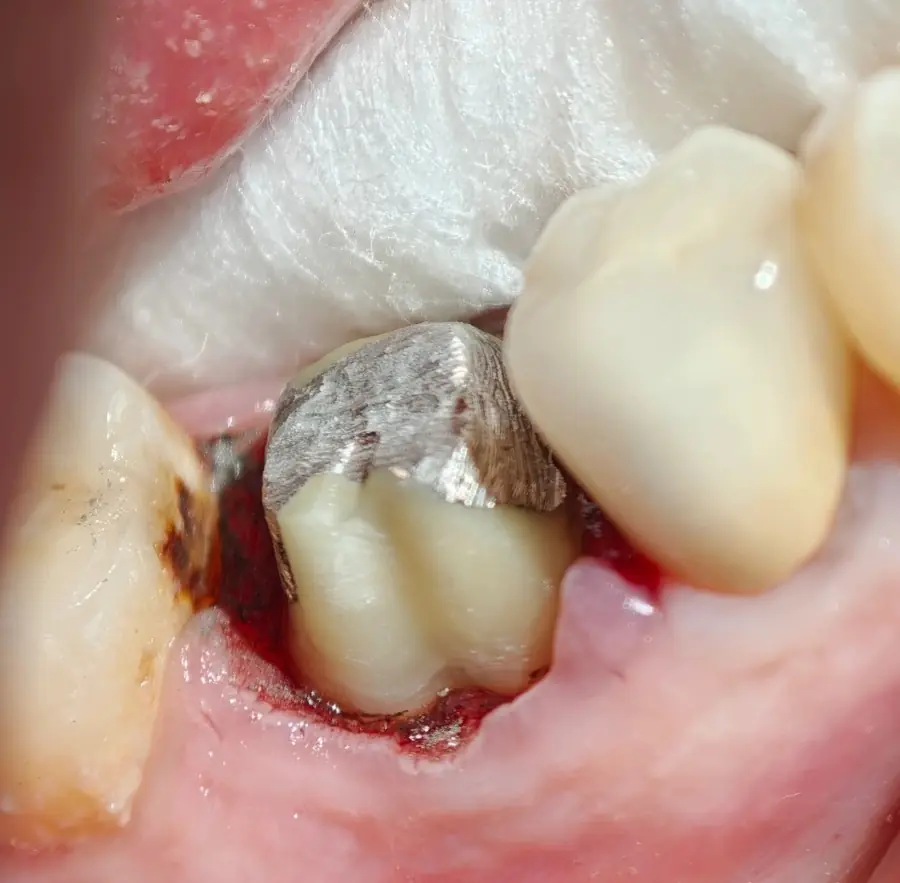

نسخه استخراجشده؛ ترجمه یا تأیید علمی انجام نشده است. وضعیت: captured
برای اسکن داخلدهانی دندان را پوار زدهای، ولی سطح دوباره خیس میشود. رطوبت از ناحیهی زیر زبان و اطراف دندانها روی سطح دندان برمیگردد و با ساکشن هم بهطور کامل جمع نمیشود. چطور میشود سطح را در لحظهی اسکن واقعاً خشک داشت؟

برای اسکن داخلدهانی، خشک بودن محیط اهمیت زیادی دارد. خشکی ظاهری بعد از خشک کردن با خشکی واقعی در لحظهی ثبت یکی نیست؛ چون رطوبت به سطح برمیگردد و مکش این بازگشت را کامل نمیگیرد، فاصلهی زمانی میان خشک کردن و اسکن کردن خودش یک متغیر است.
وقتی رول پنبه در محیط نباشد و روی دندان پوار بزنی، رطوبت اطراف دندان فقط جابهجا میشود و در محیط باقی میماند؛ هوا مایع را از یک نقطه به نقطهی دیگرِ همان میدان میراند و کل مایع سر جایش میماند.
روش کار استفاده از رول پنبه است، اما هدف اصلی از آن کنترل زبان و بزاق زیر زبان نیست. وقتی رول پنبه کنار دندان قرار داشته باشد، هنگام پوار زدن رطوبت به سمت رول رانده میشود و جذب آن میشود؛ به این ترتیب رطوبت عملاً از محیط حذف میشود، نه اینکه صرفاً از یک نقطه به نقطهی دیگر منتقل شود.
این با کاربرد متداولتر رول پنبه یکی نیست: آنجا رول زبان را مهار میکند و بزاق مجاری را میگیرد؛ اینجا مقصدی است که رطوبت به سمتش رانده میشود، و جای قرارگیریاش را همین نقش تعیین میکند.
نتیجه این است که سطح دندان و مارجینها هنگام اسکن واقعاً خشک هستند و دقت اسکن بالاتر میرود.